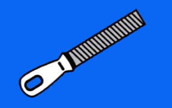

MaksWax Diensten
Slijpen
Het slijpen van de skikanten is een precisie werkje. Eerst controleer ik de kanten op eventuele bramen en verwijder deze. Dan slijp ik de kanten met een speciale vijl en polijst de kanten met een diamant vijltje.
De uiteinden van de staalkanten top ik af op zo’n 15cm zodat uw ski’s beter draaien.
Ik slijp kanten standaard op 88′ maar op 87′ kan ook.

Waxen
Eerst borstel ik de oude wax uit het belag van uw ski’s dan wax ik de nieuwe wax handmatig in met een speciaal waxijzer.
Als de ski’s voldoende zijn afgekoeld krab ik de overtollige wax uit het belag. Als finishing touch, polijst ik het belag met een nylon borstel zodat de structuur van het belag weer naar boven komt.
Uw ski’s waxen doe ik met de kwaliteits-wax van Holmenkol.
Belag reparatie is ook mogelijk, ik repareer dan krassen in het belag van uw ski’s die bijvoorbeeld zijn ontstaan wanneer u een steen heeft geraakt.